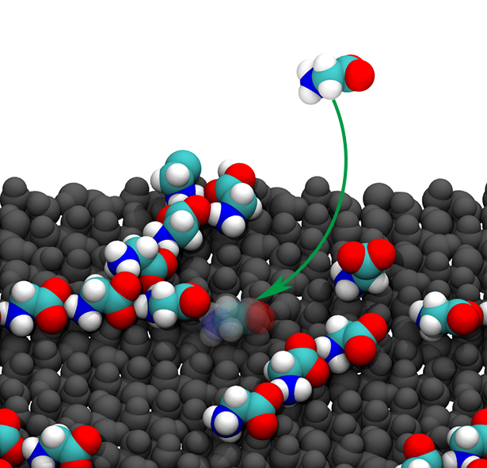
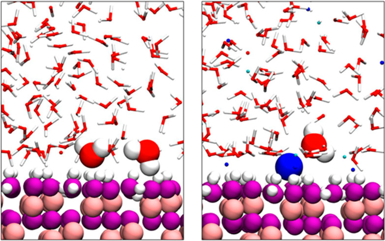
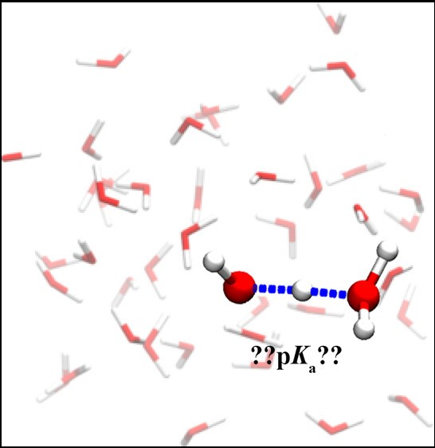

Research Projects¶
Investigation of nucleation of NaCl at various environments using machine learning-assisted enhanced sampling molecular dynamics simulations

From the melt and in aqueous solution
On the role of α-alumina in the origin of life: Surface driven assembly of amino acids
Water wetting and ion adsorption at water/soid interfaces
SHG prediction (collabrated with experimental teams)
Calculation of bulk water pKa using the SCAN functional
